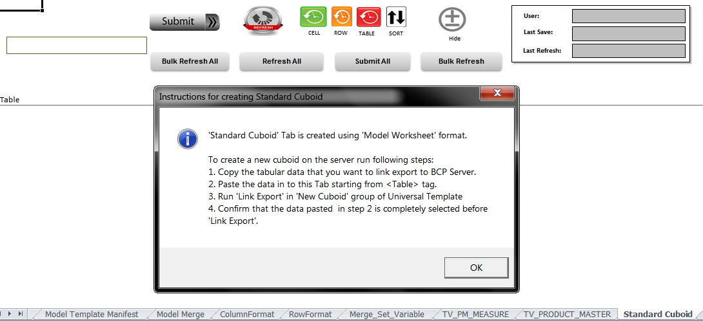
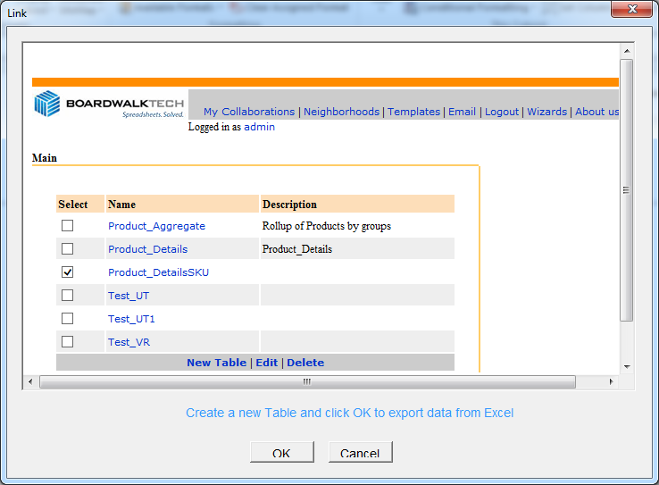
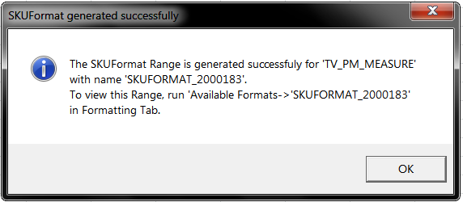

-
-
1. Organization of Manual
The user's manual consists of four sections:
♦ Introduction
♦ System Summary
♦ Getting Started
♦ Using the System
♦ Introduction section explains in general terms the system and the purpose for which it is intended.
♦ System Summary section provides a general overview of the system. The summary outlines the uses of the system's hardware and software requirements, system's configuration, user access levels and system's behavior in case of any contingencies.
♦ Getting Started section presents briefly 'Template Mode' & 'Universal Template' Menu.
♦ Using The System section provides a detailed description of the functions provided by this tool.
-
2. Introduction
This section provides a brief introduction of Universal Template and the purpose for which it is intended.
2.1 Overview
Universal template is a tool to build the Boardwalk Template that consists of all standard Boardwalk features, provisions to include custom features and is relatively faster for development. This tool provides built in Customized Ribbon to carry out various configurations like adding Cuboid, assigning format to the cuboids and adding custom macro's etc.
2.2 Purpose
The Universal Template is developed with the standard coding framework which is also extensible.
Why we need to go for standardization?
Eliminate Duplication of Code
Several versions of the same code
Testing of the same feature
Time consuming
Forget to remove unnecessary code
In older versions of BW templates, the unwanted custom code remains in new templates. In UT the basic code remains the same and the customize code that is maintained under a separate module can be cleared from the template and it is considered as a blank template for reuse for a new process/Project. .
Installer Issues
In previous/former versions we used light installer for BCP client Installation which were error prone with issues like 'Missing some .dll file', 'Missing MSCOMCTL' etc.
With UT, there is no need to install BCP Client. Moreover, there will be a 'System check' before every download to check the compatibility of users system, and generates the test report. This test report helps to take further actions.
To Summarize, UT Provides with below advantages:
♦ Easy to use
♦ No dependency on MSCOMCTL
♦ Ribbon based Design Interface that is user friendly
-
3. System Summary
System Summary section provides a general overview of the system.
The summary outlines the uses of the system hardware , software requirements, system configuration, user access levels and system behavior in contingencies.
3.1 System Configuration
UT is compatible with Excel 2007, 2010 and 2013 versions.
UT requires 'Excel Ribbon' which is not present in Excel 2003.
It requires Internet connectivity in order to perform basic functionalities like Save Data or Submit to Database, Refresh Data ,Create Cuboid, Link Export and Link Import.
3.2 Users
There are 2 user groups for this tool:
♦ User; who uses the tool in 'User Mode' to use the application
♦ Designer; who uses the tool in 'Design Mode' to create application.
Here, Designer or User Role can be played by a Developer, Analyst, Manager, Tester and End User.
3.3 Pre-Requisite
♦ A designer should have knowledge of Microsoft Excel.
♦ Knowledge of BCP (Boardwalk Collaboration Platform) knowledge
♦ Knowledge of Boardwalk Concepts like Link Export, Link Import, Submit and Refresh etc.
3.4 Assumptions
♦ A BCP server with BCP v3.215 or higher setup
♦ Designers have sufficient access / rights to create BCP objects.
-
-
4. Getting Started
Getting Started section presents briefly about the options under 'Template Mode' & 'Universal Template' Menu.
-
4.1 Initial Setup
This section provides the details with screen shots on how to setup the server URL, Process Name, Workbook Name and Template Version etc.
To set the above settings go to Universal Template→Navigate→Range Settings→System Properties as
This will open worksheet 'System Properties”.
-
4.2 ‘Template Mode’ Tab Menu
Universal Template works in two modes
1. Design Mode
2. User Mode
Design Mode
To create the boardwalk template, use this tool in "Design Mode" "Universal Template" Menu is enabled when this mode is ON Template cannot be downloaded, when Design Mode is ON
User Mode
To operate the Final Boardwalk Template, use this tool in "User Mode" Template can be downloaded in "User Mode" No design level changes/enhancements can be made in "User Mode'
-
Template Mode Mode Description Design Mode To create the boardwalk template, use this tool in "Design Mode" "Universal Template" Menu is enabled when this mode is ON Template cannot be downloaded, when Design Mode is ON User Mode To operate the Final Boardwalk Template, use this tool in "User Mode" Template can be downloaded in "User Mode" No design level changes/enhancements can be made in "User Mode'
-
-
-
4.3 ‘Universal Template’ Tab Menu
Universal Template menu is enabled when "Design Mode" is made ON.
Below are main "Sections" in this Menu.
-
4.3.1 ‘New Cuboid’ Section
-
New Cuboid Features Name of the Feature Functionality Description 1. Add New Tab Adds new tab in the template, using which user can-
1. Link export new cuboid.
2. Submit changes in link exported cuboid.
3. Refresh Template
4. Audit Trails (Cell, Row & Table History) can be launched.
2. Open Model Tab Helps you navigate to various "Model Sheets" Model sheets show the standard look and feel and how UI is defined. 3. Link Import Adds New sheet in the template, where we can link import existing cuboid from the collaboration after successful authentication 4. Link Export This will export the cuboid into the collaboration after successful authentication. 5. Default Settings This will set the default behaviour of cuboid for Insert, Copy and Delete Row operations.
-
-
4.3.2 ‘Navigate’ Section
-
Navigate Section Name of the Section Functionality Description Range Setting Information in the template is stored as ranges, so all the available ranges present in template are listed in this ribbon. Global Settings Various Setting related information from System Properties tab is listed here. The setting can be updated only for "RW" assignments. Some of the settings will be Read only and so cannot be editable. The assignments are defined in System Properties tab. Display Cuboid Displays list of cuboids present in template and on selection user can navigate to that sheet. Meta Data Site Map Displays all relative information of the cuboid like column names, active format, validation, cuboid ID etc. Neighbourhoods This will show the neighbourhood structure with respective users in it. Merge Rules Indicates the list of merge rules details created in template.
-
-
4.3.3 ‘Formatting’ Section
-
Formatting Section Name of the Section Functionality Description General Format This is used for formatting of 3 types
1. Single Row: Generate format where uniform format is to be applied across all the rows and it is saved in RowFormats tab.
2. SKU Format: When particular Pattern for set of more than one rows (SKU) needs to apply then this type is used. Select rows for which needs to format and apply formatting, It will generate that format type which can be assigned to the cuboid.
3. Column Format: Select column and apply format which is saved in ColumnFormat tab so the generated column Format can be applied to column of the cuboid.
Assign Format The formats created for the selected cuboid will be listed in this tab. Format can be a Row Level, SKU level or column level. User can Select any format to assign the selected format and click on TEST format tab to confirm. Available Format All Formats created for cuboid are listed in this tab and enable you to navigate to the selected format. Open Assign Format This will open the currently assigned format to the cuboid. Test Format We can use this to verify the assigned format .On clicking this assigned format is applied to the entire cuboid. Clear Assign Format This will clear the format assigned and default format gets applied to cuboid. On clicking Test format the clear format will enable default format to the entire cuboid.
-
-
4.3.4 ‘This Cuboid’ Section
-
This Cuboid Section Name of the Section Functionality Description More Options Using this we can add validation rules, popup menus, Conditional Format and custom Macros SKU and row operations. Popup Menus Using this we can apply right click menu at cell or/and row level. Validation Rules Displays the validation rule set for cuboid. This option will enable designers to manage the validation rules for a selected column. Conditional Formatting Displays conditional formatting applied to cuboid. This option will enable designers to manage the conditional formatting for a selected column. Please note the conditional formatting can be defined normally. Custom Cuboid Macro Apart from the built-in macros some custom macros based on business rules are defined which will be displayed in this tab. This option enables a designer to manage the custom macro and events. Show Cuboid Info Information related to Cuboid metadata can be retrieved using this option. Set Column Constraint Used to apply Constraints and manage constraints for one or more columns of selected cuboid. Set Cuboid Links Used to link the cuboids in the template as source and target cuboid link can be established. Business Rules Business logics are generated by defining Business Rules.
-
4.3.5 ‘Assign Selected Range’ Section
-
Assign Selected Range Section Name of the Section Functionality Description Navigate to column Format This will help to navigate to column format defined for cuboid Navigate to Validation Rules This helps to navigate to validation rules. Navigation to conditional format Helps to navigate to Conditional format Navigate to Custom macros Helps to navigate to custom macros
-
-
4.3.6 ‘Utilities’
-
Utilities Section Name of the Section Functionality Description Unlink Cuboid This will unlink the cuboid from the template. Utilities This gives the list of utilities for e.g. Reset template, reset last update, reset ribbon. Help Provides a list of all features and detailed information on the selected topic.
-
-
-
5. Using the System – ‘Create New Application Using UT’
This section provides a detailed step by step procedure to build an application using UT.
-
5.1 Initial Setttings - Set Template Mode and System Property
I. Set Template Mode to "Design'
II. Standard "Model Sheet" will be displayed. This defines the look and feel of tabs in the Template.
III. Navigate to 'System Properties Sheet” using "Navigation" section → "Range Settings" as shown below-
IV. In System Properties Sheet, configure mainly below 5 parameters relative to the new application under design, so in next step we can start creating data for our new application.
♦ BOARDWALK_SERVER
♦ PROCESS
♦ WORKBOOK
♦ BWTemplateName
♦ DEFAULT_SHEETNAME
V. Below is the setting for sample application "TestUT'

-
5.2 Creating Cuboids
I. Now, we can create data by adding a New Tab for "TestUT" application.
II. Add New Tab, by Navigating to Universal Template Menu-> New Cuboid Section-> Add New Tab-> Standard Cuboid.
III. A new Sheet is added with name as 'Standard Cuboid'

IV. Follow the instructions in the pop up message to create cuboid.
a. Copy/Paste or enter the required data

Paste the data on top of "Table" Tag i.e. from cell A8 to Link Export successfully.
b. Select the Range and Click on "Link Export'
c. Confirm by selecting "Yes'
d. Navigate through the required Collaboration -> Whiteboard -> Select "New Table" to create new cuboid
e. Enter the desired Cuboid Name and click "Create" and the "OK"
f. Cuboid is created and linked exported. The Cuboid Name is now assigned to the Sheet Name.
If the required cuboid is already created, then use "Link Import" to get the data on the UT. Let's get an existing cuboid "Product_DetailsSKU" in "TestUT" application. Below is the course of action.

Click on Test format will apply default format to the cuboid as shown below
-
-
5.3 Apply Formatting
To apply formatting to a cuboid, first we need to generate one of the following formats, depending on the form of the data.
Single Row Format
Generate and assign this format, when all rows of the cuboid need same formatting.
SKU Level Format
Generate and assign this format, when formatting of "group of rows" is uniform and same needs to be applied across the cuboid.
Column Level Format
Generate and assign this format, when a specific column of the cuboid needs different formatting.
You will need to follow 3 basic steps for any of above 3 types:
♦ Generate Format
♦ Assign Format
♦ Test Format
-
5.3.1 Single Row Format
Generate and assign this format, when all rows of the cuboid need same formatting. Let us generate and apply Single Row Format on "Test_UT1" tab.
5.3.1.1 Generate Single Row Format
I. Apply desired formatting to the Header and 1st row of the cuboid.
Applied Formatting: Header and Grey cells are protected, yellow cells unprotected, white Border applied, BWID column hidden

Below aspects of formatting can be saved using UT
♦ Format Cells
♦ Column width
♦ Cell Protection
♦ Column alignments
♦ Hide, unhide columns
II. Select the Header and 1st Row.
III. Navigate to Universal Template Menu →Formatting Section →Generate Format→ Select Single Row Format
IV. Single Row Formatting generated with a Name Range

V. The ROWFORMAT is generated successfully; however it is not assigned yet to the cuboid.
VI. We can check the generated format in "Available Format" ribbon as shown below
5.3.1.2 Assign Single Row Format
I. Assign generated ROWFORMAT by Navigating to Universal Template Menu→ Formatting Section→ Assign Format→ Select the generated ROWFORMAT
II. ROWFORMAT Assigned successfully
III. The assigned ROWFORMAT will be applied to the cuboid only when you "Test Format" or in "User Mode'
If the ROWFORMAT is not assigned to the cuboid then UT applies a "Default Format" to the cuboid.
5.3.1.3 Test Single Row Format
I. Navigate to Universal Template Menu→ Formatting Section→ Click Test Format

II. The assigned ROWFORMAT is applied to entire cuboid, hence tested.
-
5.3.2 SKU Level Format
Generate and assign this format, when formatting of "group of rows" is uniform and same needs to be applied across the cuboid.
Let us generate and apply SKU Level Format.
5.3.2.1 Generate SKU Level Format
I. Apply desired formatting to the Header and first set of rows below header.
Here SKU grouped on the basis of product# (1st set of measures) and Header row is selected for SKU formatting.
Below aspects of formatting can be saved using UT
♦ Format Cells
♦ Column width
♦ Cell Protection
♦ Column alignments
♦ Hide, unhide columns
II. Select the header and first set of row
Navigate to Universal Template Menu →Formatting Section →Generate Format→ Select SKU
III. SKU Formatting generated with a Name Range

IV. The SKUFORMAT is generated successfully; however it is not assigned yet to the cuboid.
V. We can check the generated format in "Available Format" ribbon as shown below
5.3.2.2 Assign SKU Level Format
I. Assign generated SKUFORMAT by Navigating to Universal Template Menu→ Formatting Section→ Assign Format→ Select the generated SKUFORMAT
II. SKUFORMAT Assigned successfully
III. The assigned SKUFORMAT will be applied to the cuboid only when you "Test Format" or in "User Mode'
5.3.2.3 Test SKU Level Format
I. Navigate to Universal Template Menu→ Formatting Section→ Click Test Format

II. The assigned SKUFORMAT is applied to entire cuboid, hence tested.
-
5.3.3 Column Level Format
This is the traditional formatting where the column formatting is defined using the column Indexes.
Let us generate and apply Column level Format on 'Test_UT1' tab.
5.3.3.1 Generate Column Level Format
I. Go to the required Cuboid (Test_UT1) on which you desire to apply Column level format.
Universal Template Menu→ Navigation Section→ Display Cuboid→ Select 'Test_UT1'
II. Navigate to Universal Template Menu→ Formatting Section→ Generate Format→ Select Column.
III. Update COLUMNFORMAT Range as per the required formatting.
5.3.3.2 Assign Column Level Format
I. Navigate to the "Test_UT1" cuboid - Universal Template Menu→ Navigation Section→ Display Cuboid→ Select 'Test_UT1'

II. Assign generated COLUMNFORMAT by Navigating to Universal Template Menu→ Formatting Section→ Assign Format→ Select the generated COLUMNFORMAT
III. COLUMNFORMAT Assigned successfully
IV. The assigned COLUMNFORMAT will be applied to the cuboid only when you "Test Format" or in "User Mode".
5.3.3.3 Test Column Level Format
III. Navigate to Universal Template Menu→ Formatting Section→ Click Test Format
IV. The assigned COLUMNFORMAT is applied to entire cuboid.
To check Current Format that is assigned to the cuboid, Click "Open Assigned Format'.
Universal Template Menu→Formatting Section→ Click Open Assigned Format
To remove the format assigned to cuboid, Select "Clear Assigned Format'. With this the default format gets applied to the cuboid.
Universal Template Men→ Formatting Section→ Click Clear Assigned Format
On Clear assigned format active format is removed from the cuboid but still it exist in the template and present in the "Available Format" and "Assign Format" menus so that we can assign it anytime in future.

-
-
-
-
-
-